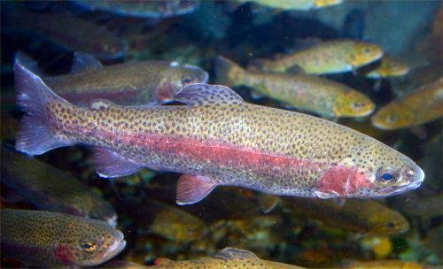
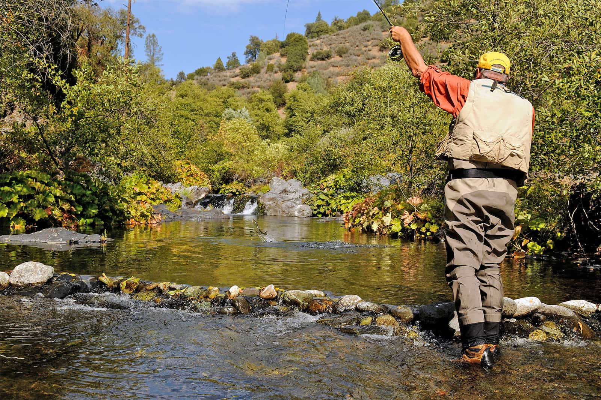
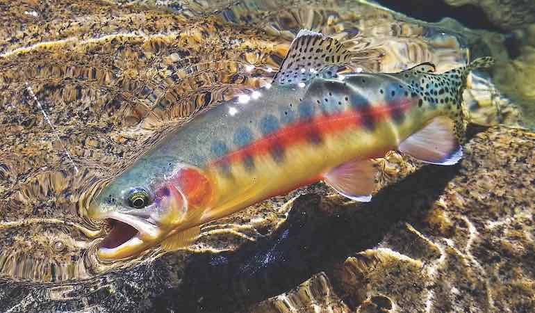

Rainbow Trout
California's most common trout species and an excellent choice for anglers of all experience levels.

Learn about trout species, the best fishing destinations, and the gear that will help make your trip successful.

California's most common trout species and an excellent choice for anglers of all experience levels.

Known for their size and cautious nature, brown trout provide a rewarding challenge.

California's state freshwater fish, found in high-elevation streams of the Sierra Nevada.
Loading today's fishing tip...